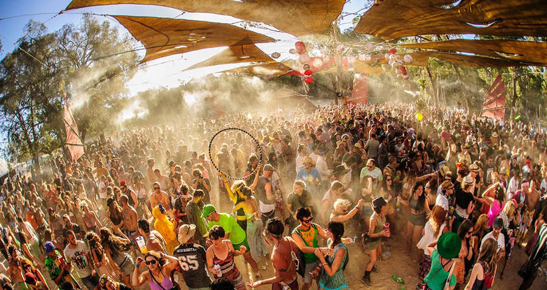

Origem do Psytrance
A história do Psytrance se inicia na Índia, um pais cheio de cores, sabores e encantos. Toda a aura mística desse país trazia viajantes da Europa e Estados Unidos que queriam fugir do intenso inverno. Goa era o local perfeito, uma ex colônia portuguesa, que além das maravilhas da cultura indiana, praias maravilhosas e as temperaturas acima dos 30 graus, ainda tinha aquele toque deixado pelos europeus. Perfeito.
Na década de 1960 Goa se tornou um local de encontro internacional entre esotéricos, místicos, espiritualizados, anarquistas, pensadores New Age, foras da lei e todo tipo de Freaks. O que essas pessoas dividiam era a oposição à sociedade tradicional ocidental, num momento de efervecência de contracultura.
Vários tipos de encontros e festas aconteciam em Goa, com elementos trazidos pelos viajantes ocidentais. Teatros psicodélicos performáticos nas praias, decorações fluorescentes e elementos retirados da mitologia indiana passaram a ser parte da identidade de Goa. Em 1986 o Dj Frances chamado Laurent teve a ideia de inserir em Goa a nova tendência mundial: a música eletrônica. No início houve certo estranhamento e até certa repulsa por parte da cena em Goa, mas aos poucos muitos foram aderindo as batidas eletrônicas que já eram febre no mundo ocidental.
Para a maioria dos estrangeiros, permanecer durante o verão na Índia era extremo, e então voltavam para o verão europeu (mais ameno). Esse contato frequente entre ambas as cenas favorecia a intensa e rápida a troca de conhecimentos. Isso fez com que, naquele momento, Goa se tornasse um centro de inovação na cultura eletrônica, desenvolvendo seu próprio estilo e também de cultura alternativa em geral, sendo apelidado de “Universal Frequency Highway”.
Graças ao desenvolvimento da tecnologia a música eletrônica pode se espalhar rapidamente. DAT (digital audio tape - as fitas) eram uma “mão na roda” para realizar a cópia de tracks. Já nos anos 1980 a possibilidade de produção de música psicodélica com computadores e sintetizadores melhorou ainda mais o processo. Os avanços tecnológicos associados aos encontros frequentes de artistas dedicados em criar, fez com que Goa tivesse uma reputação internacional. Entretanto, as autoridades começaram a se preocupar com a situação e em 1995/96 por ordem judicial as festas foram banidas da região, A solução foi então realizar festas em lugares privados e/ou secretos que não tinham atenção da policia, tornando as festas underground. Nesse momento Goa saiu um pouco do foco dos viajantes Freak internacionais e a Thailandia passou a receber certa atenção.
À medida que a cena Psytrance se expandia para além das praias de Goa e se estabelecia em novos territórios, o gênero continuou a evoluir e diversificar. A transição da Índia para outros locais trouxe novas influências e estilos que ajudaram a moldar o Psytrance moderno.
A expansão, diversificação, evolução e o impacto cultural
O Expansão Global e Diversificação
O início dos anos 2000 marcou a ascensão de grandes festivais de Psytrance que atraíam multidões de todo o mundo. Festivais como o Universo Paralello no Brasil, o Boom Festival em Portugal e o Ozora Festival na Hungria tornaram-se marcos na cultura Psytrance. Esses eventos não apenas celebravam a música, mas também a filosofia e o estilo de vida associados ao Psytrance, promovendo um senso de comunidade e conexão global entre os participantes.
Durante o final dos anos 1990 e início dos anos 2000, o Psytrance se estabeleceu em outras regiões, como a Europa, especialmente em países como Israel, Alemanha e Suíça. Esses novos centros de Psytrance trouxeram sua própria perspectiva e inovação para o gênero. Em Israel, por exemplo, o Psytrance começou a ganhar uma forma distinta conhecida como Full On, caracterizada por batidas energéticas e melodias cativantes. Artistas como Infected Mushroom e Astral Projection desempenharam papéis cruciais em popularizar o Psytrance em uma escala global, levando o som psicodélico a novas audiências e influenciando a produção musical.
 Conheça os festivaisA Era dos Festivais e o Crescimento da Comunidade
Para a maioria dos estrangeiros, permanecer durante o verão na Índia era extremo, e então voltavam para o verão europeu (mais ameno). Esse contato frequente entre ambas as cenas favorecia a intensa e rápida a troca de conhecimentos. Isso fez com que, naquele momento, Goa se tornasse um centro de inovação na cultura eletrônica, desenvolvendo seu próprio estilo e também de cultura alternativa em geral, sendo apelidado de “Universal Frequency Highway”.
Além da música, esses festivais se tornaram centros para a exploração de arte, espiritualidade e sustentabilidade, refletindo a filosofia "do it yourself" (faça você mesmo) que era central para a cultura Psytrance. A decoração dos festivais, com seus visuais psicodélicos e ambientes imersivos, ajudou a criar experiências únicas e inesquecíveis para os frequentadores.
Conheça as vertentesEvolução e Impacto Cultural
À medida que a cena Psytrance continuava a evoluir, surgiram subgêneros e estilos variados dentro do próprio gênero. O Psytrance evoluiu para incluir variações como o Progressive Psytrance, caracterizado por um ritmo mais suave e melódico, o Dark Psytrance, com suas batidas mais agressivas e atmosferas sombrias, o Full On, com suas batidas energéticas e melodias cativantes. Cada subgênero trouxe novas dimensões e possibilidades criativas ao Psytrance, mantendo o gênero inovador.
O impacto cultural do Psytrance não se limitou apenas à música. Ele influenciou a arte, a moda e até mesmo o design de eventos. A estética psicodélica, com seus padrões vibrantes e surrealistas, se tornou uma marca registrada dos eventos e festivais de Psytrance. A filosofia de conexão com a natureza e a busca por um estado elevado de consciência também se refletiu em práticas de sustentabilidade e cuidados com o meio ambiente promovidos por muitos eventos.
Conheça os artistasO Psytrance continua a ser uma força viva e dinâmica dentro da cena musical eletrônica. A crescente interconexão global e o avanço contínuo da tecnologia garantem que o Psytrance continuará a evoluir e a explorar novas possibilidades. Artistas e produtores ao redor do mundo continuam a experimentar e inovar, mantendo o gênero relevante e excitante para novas gerações de fãs.
O legado do Psytrance, desde suas raízes místicas em Goa até sua ascensão global, é um testemunho da capacidade da música de transcender fronteiras culturais e conectar pessoas em uma celebração compartilhada da criatividade e da autoexpressão. O futuro do Psytrance é promissor, com novas ondas de inovação e a contínua exploração das profundezas da experiência psicodélica